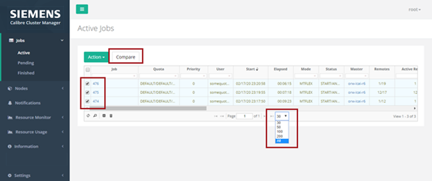
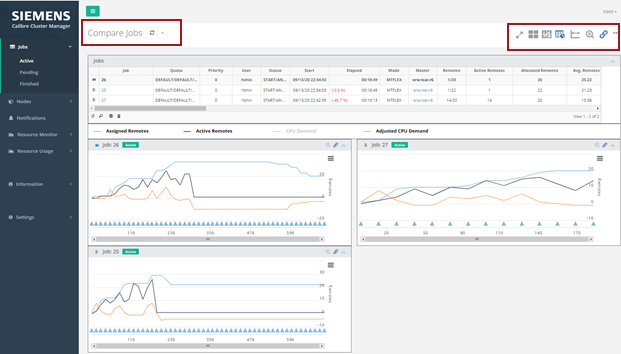
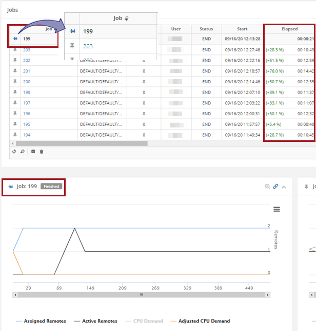
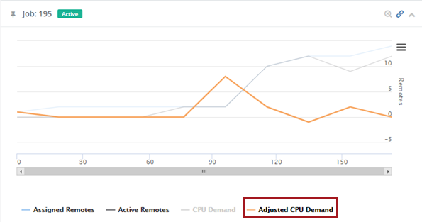

This procedure shows you how to control
the number of active job records to display and how to easily compare
chart information for multiple jobs in order to analyze runtime
and scalability.
Procedure
- Open a
browser and enter the server name on which the CalCM daemon is running
and the dashboard server port specified in the CalCM configuration
file (calcmd.conf). For example,
DASHBOARDPORT = 9902
enter in the browser,
http://server_name:9902
- In the
Active Jobs page, click the dropdown icon at the bottom‑center of
the table to select the number of job records to display as shown
in Figure 1. The default is 30 job records
maximum per page.
This functionality is also available in the Finished
Jobs page, but it is not available in the Pending Jobs tables because
of the potentially large number of records in this category.
- To compare
detailed job information for multiple jobs, choose several job IDs
in the Job column of the table and click the Compare button.
Note: The Compare button is
available in the Active Jobs and Finished Jobs pages and is only enabled
when two or more job IDs are selected. The job selections are persistent,
even when the web browser back‑arrow is clicked.
Figure 1. Active
Jobs Record Selection and Compare
The Compare Jobs page opens and displays the information
for the selected job IDs.
Figure 2. Compare
Jobs Page Functions 
- In the
jobs table, click the pin icon (next to the job ID) to select a
baseline job for comparing information across all the jobs in the
table and charts.
Note: If you sort the table columns or charts, the
baseline job stays “pinned” as the first table entry and the top
chart position.
Figure 3. Select
Baseline Job for Comparison
- Control
the chart features using the icons in the upper‑right corner of
the Compare Jobs page (shown left to right):
- Compact
view — Toggles charts from normal to compacted view.
- Switch
view — Switches the chart views between horizontally
and vertically stacked orientation.
- Switch
Chart Sorting — Changes the order of the charts between
horizontal and vertical ordering.
- Sync
Order Between Table and Charts — Synchronizes the sort
order between the jobs table and the charts.
- Common
Axis — Toggles the display of the x‑ and y‑axis scales
for runtime and scalability comparison.
- Zoom
out — Resets the zoom (out) across all charts.
- Link
Charts — Toggles the linking functionality across all
charts.
- Chart
(ellipses (…)) — Access X‑axis labels and Chart
Ordinal menus. See “Viewing Chart Information in the CalCM Dashboard” for menu
detail.
- Use the
chart legend labels to toggle the display of plot‑lines and event
markers.
Hover your cursor over a plot label to highlight the
corresponding plot line.

Results
You have used table and chart functions in the CalCM dashboard
to selectively compare job data and control how it is displayed.